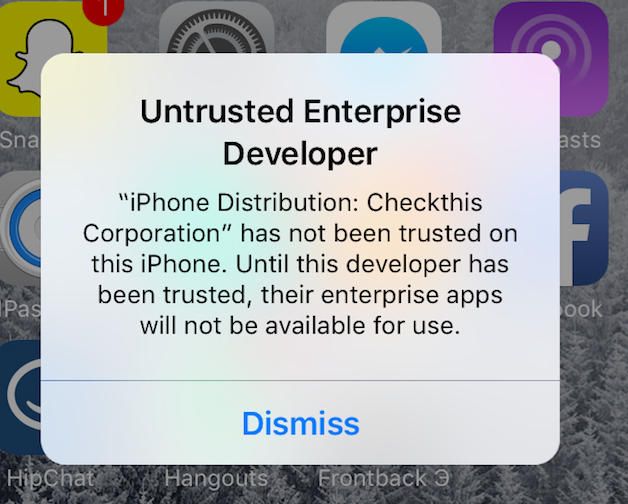

iOS9 Untrusted Enterprise Developer with no option to trust
This is not a duplicate of Untrusted App Developer. Since iOS9 there is no option to trust an enterprise build. Has anyone found a workaround?

Answer
In iOS 9.1 and lower, go to Settings - General - Profiles - tap on your Profile - tap on Trust button.
In iOS 9.2+ & iOS 11+ go to: Settings - General - Profiles & Device Management - tap on your Profile - tap on Trust button.
In iOS 10+, go to: Settings - General - Device Management - tap on your Profile - tap on Trust button.
Suggest
Do it like this:

Go to Settings -> General -> Profiles - tap on your Profile - tap on the Trust button.
but iOS10 has a little change,
Users should go to Settings - General - Device Management - tap on your Profile - tap on Trust button.

Reference: iOS10AdaptationTips